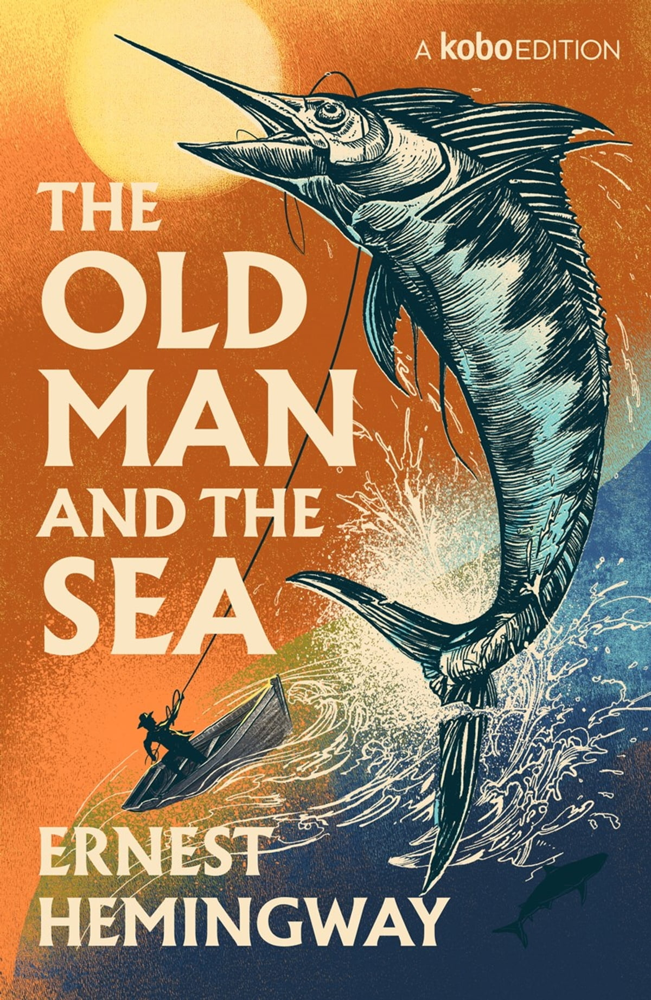
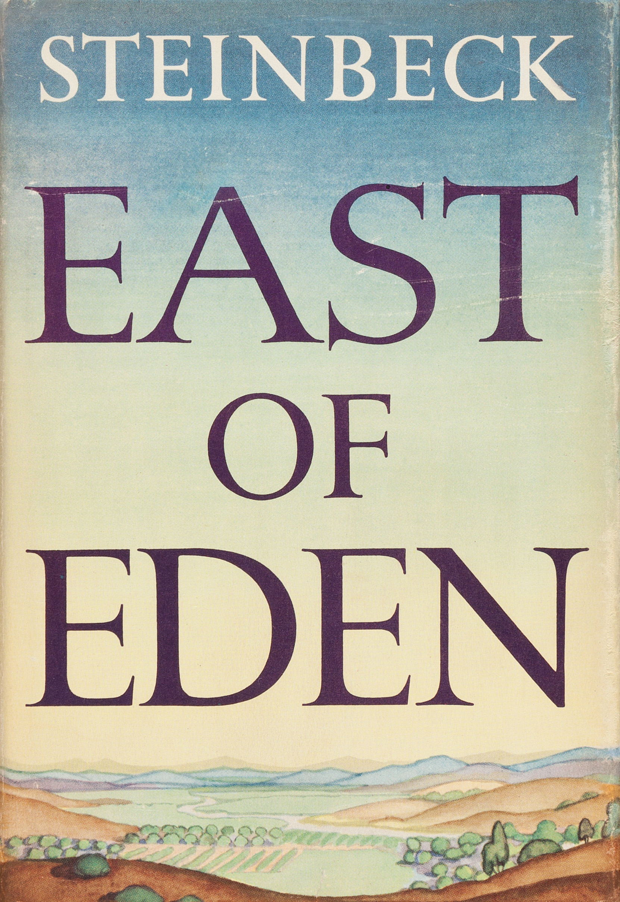
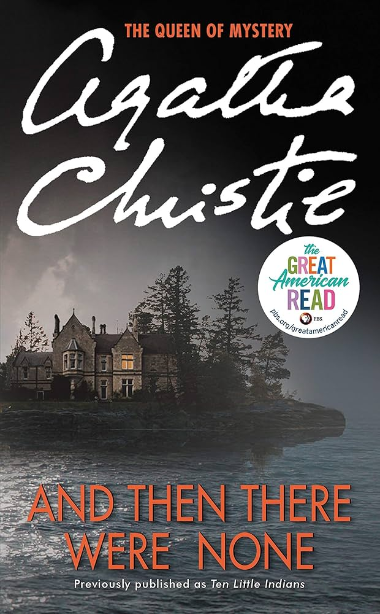
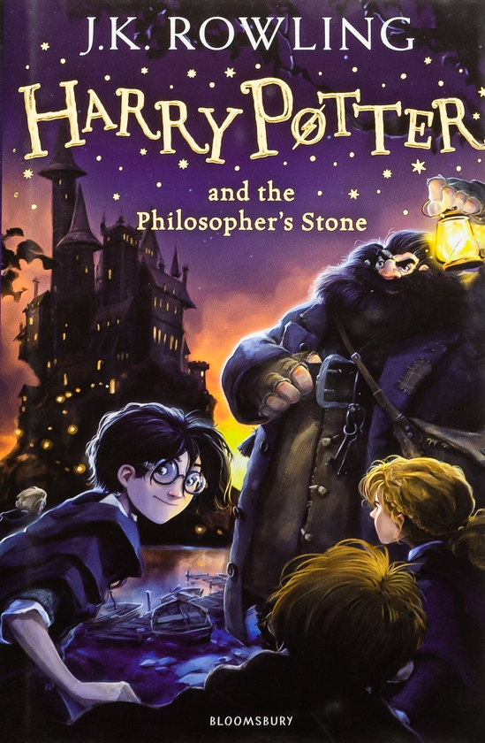

What To Read?
Some books are to be tasted, others to be swallowed, and some few to be chewed and digested. The world's greatest literature is a collection of voices that have survived the test of time, offering us wisdom, adventure, and a deeper understanding of ourselves. From the foggy streets of Victorian London to the magical realms of fantasy, these masterpieces are essential pillars of our global culture.
BOOOOOOOOKS!
Below is a selection of books that every reader should experience at least once:
| Book Title | Book Features | ||||
|---|---|---|---|---|---|
| Short Information | Long Information | ||||
| Author | Genre | Publishing Year | Cover | Description | The General Information About These Books |
| The Old Man and the Sea | Ernest Hemingway | Literary Classic | 1952 |
 |
A powerful story of an aging fisherman's epic three-day battle with a giant marlin in the Gulf Stream. |
| East of Eden | John Steinbeck |
 |
A grand saga that follows two families and explores the eternal struggle between good and evil. | ||
| And Then There Were None | Agatha Christie | Mystery/Detective | 1939 |
 |
Ten strangers on an isolated island are killed one by one, following the lines of a nursery rhyme. |
| The Big Sleep | Raymond Chandler | Mystery/Noir | A definitive noir mystery featuring detective Philip Marlowe as he navigates a dark web of crime and corruption. | ||
| Harry Potter and the Philosopher's Stone | J.K. Rowling | Fantasy/Adventure | 1997 |
 |
An orphaned boy discovers his magical heritage and enters a world of wizardry, friendship, and danger. |
| Harry Potter and the Chamber of Secrets | 1998 | Harry returns for his second year to face a mysterious monster that is petrifying students within the school. | |||
These are two of the mentioned books that you can read here: